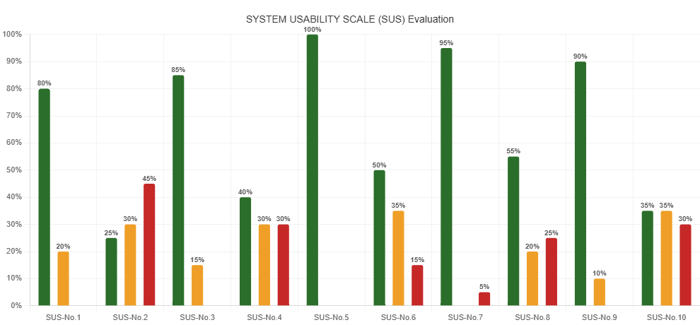

Summary of usability testing results
| SUS - SYSTEM USABILITY SCALE |
5-Strongly Agree |
4-Agree |
3-Neutral |
2-Disagree |
1-Strongly Disagree |
| 1. I think that I would like to use this system frequently |
3-15% |
13-65% |
4-20% |
0-0% |
0-0% |
| 2. I found the system unnecessarily complex. |
3-15% |
6-30% |
6-30% |
4-20% |
1-5% |
| 3. I thought the system was easy to use. |
9-45% |
8-40% |
3-15% |
0-0% |
0-0% |
| 4. I think that I would need the support of a technical person to use this system. |
4-20% |
2-10% |
6-30% |
6-30% |
2-10% |
| 5. I found the various functions in this system were well integrated. |
7-35% |
13-65% |
0-0% |
0-0% |
0-0% |
| 6. I thought there was too much inconsistency in this system. |
2-10% |
1-5% |
7-35% |
8-40% |
2-10% |
| 7. I would imagine that most people would learn to use this system very quickly. |
11-55% |
8-40% |
0-0% |
1-5% |
0-0% |
| 8. I found the system very cumbersome to use. |
2-10% |
3-15% |
4-20% |
7-35% |
4-20% |
| 9. I felt very confident using the system. |
7-35% |
11-55% |
2-10% |
0-0% |
0-0% |
| 10. I needed to learn a lot of things before I could get going with this system. |
2-10% |
4-20% |
7-35% |
5-25% |
2-10% |

Discussion of Findings
The SUS results show that the G6 Market prototype has strong usability, especially in learnability, feature integration, and user confidence. SUS-No.5 received 100% positive responses, showing that users felt the features were well integrated. SUS-No.7 had 95% positive responses, meaning users believed the system was easy to learn. SUS-No.3 and SUS-No.9 also received high positive responses of 85% and 90%, showing that users found the system easy to use and felt confident while using it.
However, some areas still need improvement. SUS-No.2 had 45% negative responses, suggesting that some users found the system complex. SUS-No.4 showed mixed responses, with 40% positive, 30% neutral, and 30% negative, meaning some users may still need guidance. SUS-No.10 also had only 35% positive responses, showing that some users felt they needed to learn several things before getting started. Overall, the prototype performed well but can still be improved to make it simpler and more user-friendly.
Key Issues Identified
| Item |
Issue |
% Concern |
Severity |
| SUS-No.2 |
Unnecessarily complex |
45% |
High |
| SUS-No.4 |
Needs technical person to use |
30% |
Medium |
| SUS-No.10 |
Required learning before use |
30% |
Medium |
| SUS-No.8 |
Found system cumbersome |
25% |
Low |
| SUS-No.6 |
Too much inconsistency in system |
15% |
Low |
Suggested Design Improvements
| Usability Issue |
Suggested Design Improvements |
| Lack of system feedback |
Add notifications, confirmation messages, and loading indicators after user actions. |
| Inconsistent interface design |
Standardize navigation, labels, spacing, typography, and button styles across all screens. |
| Non-functional features |
Make all buttons functional and add confirmation prompts for important actions. |
| Errors and recognition issues |
Improve error messages, add clear labels, and show coupon requirements clearly. |
| Help accessibility issues |
Improve Help Center access and add guides for features like Spin the Wheel. |
Recommendations for Improving the Prototype
The main priorities for improving the G6 Market prototype are reducing complexity, improving learnability, and enhancing overall usability. Workflows should be simplified by removing unnecessary steps and making the system easier to use without technical help.
To support first-time users, onboarding guides and help features should be added, and familiar interface patterns should be used to reduce the need to learn too many things at once. Navigation should also be clearer, with advanced features hidden until needed.
In addition, the interface must be made more consistent by standardizing layouts, buttons, and navigation across all screens to avoid confusion and improve user flow.
Completed Heuristic Evaluation Workbook